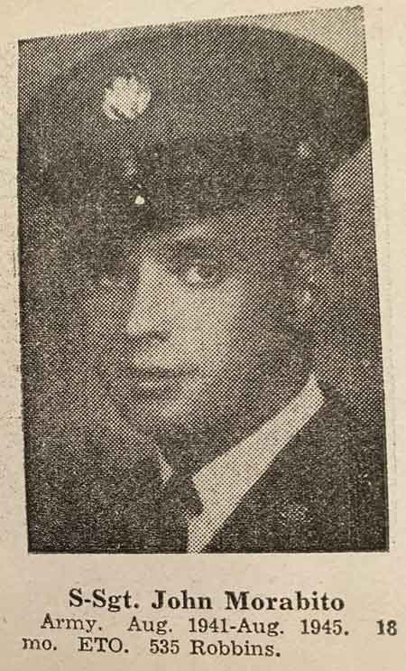
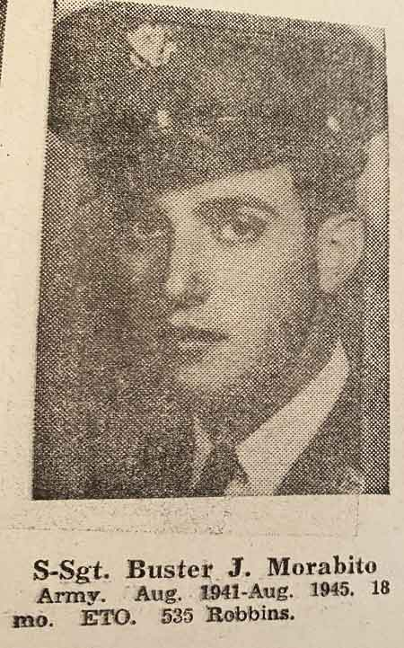

Ward-Thomas Museum


Morabito’s Market
Ward — Thomas
Museum
Home of the Niles Historical Society
503 Brown Street Niles, Ohio 44446
Click here to become a Niles Historical Society Member or to renew your membership
Click on any photograph to view a larger image, click on image again to zoom into photograph.
|
Morabito residence and supermarket at 533 Robbins Avenue. There was an underground passage between these two buildings. History of the building at 533 Robbins April 1926–Park’s Pharmacy was purchased from H.T. Calvin by brothers Frank and Robert Fowler who brought in Paul Elder one year later. This pharmacy was located at 533 Robbins Avenue. The former Park’s Pharmacy building at 533 Robbins would become in succession The Robbins Avenue Meat Market, Robbins Avenue Super Market-Morabito’s Market in 1949, then Ward’s Costume Shop. The top brick front fell apart during a windstorm, March 2019, and revealed the old Fowler Drugs sign on the wood beneath the bricks. |
Robbins
Super Market Sets Grand Opening Niles shoppers will have a new happy hunting ground tomorrow when John and Sam Morabito swing wide the doors of their enlarged and remodeled Robbins Avenue food market for its grand opening as the Robbins Super Market. The store, which bears little remblance to the place of business the Morabito’s customers knew before the brothers began remodeling last May, is one of the largest, most modern and attractive grocery stores in town. In addition to a complete line of Golden Dawn
food merchandise and a fully stocked meat department operated
by Bud Williams, the new store will feature a large counter
of notions, quick–gifts, art accessories, patent medicines
and light hardware for the kitchen. The Morabito brothers, Sam and John, bought the store from their sister, Mary Razzano, at the time of her marriage two years ago. The remodeled business utilizes space in the building previously occupied by the Fowler Drug Store. The building has been lengthened 40 feet to give a one room store space of 40 by 100 feet. No less than 640 feet of fluorescent tube in four triple-tube tiers, the length of the building, to illuminate the store. The entire of the backend of the store is covered by a mirror 40 feet by 5 feet which makes the big room seem even bigger. A special pride of the proprietors is their imported Italian food department, supplemented by the largest macaroni display in Trumbull County. A 30-foot refrigerator rack will keep vegetables fresh, while Bud Williams’ meats will be glorified in 40 feet of new cases. |
|
| |
||
Personnel of the store, in addition to the three entrepreneurs, include Angie and Margie Morabito, Mrs. Albert Dunlap, Sarah Mollica, Betty Ault, and Danny Engler. The Morabitos give much of the credit for the attractive arrangement of the store to their brother, Buster Morabito proprietor of Adrian Beauty Salon in Youngstown, who engineered the floor plan. Sam Morabito, who with his brother John is the proud owner of the new Robbins Avenue Market, was a barber until 1941, having operated a shave-and-a-haircut business of his own on Church Street. He was born and raised in Niles and attended school here. In 1941, he gave up his barbershop, scissors and clippers forever to join his sister, Mary, in her grocery business which he and his brother subsequently bought from her. Sam likes merchandising better than barbering,
he says, “it’s longer hours in this business.” During the war, he served for four and a half years in the field artillery with the Eighth Division, spending much of the time overseas in the European theater. His brother ‘Buster’ was in the same outfit. After his discharge, John went to work for his sister, Mary, at the Robbins Market and with his brother bought the store from her two years ago. Bud Williams is the boss man and master mind
of the meat counter at the new Robbins Super Market. Like the
Morabito brothers, in whose store he operates his independent
meat business, he is a native of Niles and has had a long experience
at his craft. |
||
| |
||
 |
 |
|
| |
||
|
Sisters Margaret, left, and Angeline Morabito are shown in their almost-empty store which will be closing in a few weeks. |
Store
closing–2004 When Sam Morabito died in 1989 and John in 1991, the two sisters were left to run the store. “It’s just too hard now with just the two of us,” Marge said. “it came to a point that if one of us ever gets sick what are we going to do? We have to give it up.” Although the store will stay open for several
more weeks to sell out the remaining stock, both Marge and Angie
say they now have accepted the closing and have made their plans. Marge said, “her dream is to play the piano again. I took piano lessons for three years in junior high school. But I couldn’t practice because I was always told–‘Go to the store and help your sister.’ Now I’m going to buy a piano and play again, you know, for my own enjoyment.” |
|
|
|
||
{kind=link}
{kind=link}
{kind=link}
{kind=link}
{kind=link}
{kind=link}
{kind=link}